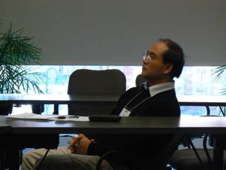

<!--#include virtual="header.inc" -->

<h2>The Industrial Microwave Modeling Group</h2>

<br /><h1>11<sup>th</sup> Seminar &quot;Computer Modeling in Microwave Engineering &amp; Applications&quot;</h1>
<br />
<p><strong>January 16, 2009<br />
Worcester, MA</strong></p>

<hr>

<h2>Photo Gallery</h2>
<br />

<p></p>
<p></p>
<p></p>
<p></p>
<p></p>
<p></p>

<!--#include virtual="footer.inc" -->